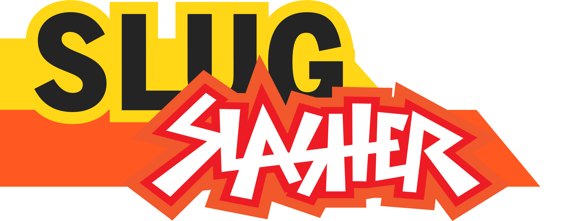

Home
About
Contact
Media
Slash Some Slugs. Save the World.
Play as a chef who is trying to save the world from an onslaught of giant slugs in
Slug Slasher
, a 2D action sidescroller developed by Slapped Silly Studios.